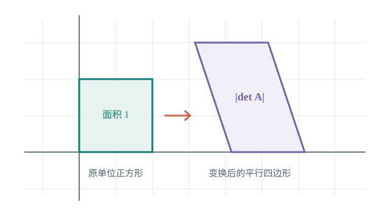

行列式与体积
行列式不是一个神秘的计算公式。它是线性变换对有向面积或体积的缩放因子；它的正负记录方向，是否为零则揭示变换有没有压扁空间。
先提出问题：为什么矩阵的数字能告诉我们面积变了多少？
给定一个 2×2 矩阵，把单位正方形的四个顶点全部变换，得到一个平行四边形。它的面积与原来相比缩放了多少？如果方向被翻转，公式又如何记录？
行列式把这两个信息压缩成一个数：绝对值表示面积或体积的缩放倍数，符号表示方向是否翻转。
先看图形：单位正方形变成平行四边形

几何直觉矩阵的两列就是变换后两条边。平行四边形的面积是底乘高，也等于两列向量组成的 2×2 行列式的绝对值。
建立数学语言：从二维有向面积到 n 维体积
对于 A=[[a,b],[c,d]]，行列式定义为：
定义 1
例如，列向量 u=(a,c)、v=(b,d) 组成的平行四边形，有向面积就是 ad−bc。若把其中一列翻转方向，符号会改变；几何面积本身不会为负，所以面积缩放倍数是 |det(A)|。
行列式与可逆性
方阵 A 可逆，当且仅当它没有把空间压扁到更低维；等价条件是行列式非零：
若 det(A)=0，列向量线性相关，二维平面被压到一条直线或一个点；三维空间中则被压到平面、直线或点。
推导与例题：一个负行列式代表什么？
取：
计算：
所以单位正方形变换后的面积为 2，方向翻转一次。注意“面积为 2”和“有向面积为 −2”不是矛盾：前者忽略方向，后者保留方向。
行变换对行列式的影响
- 交换两行：行列式乘以 −1；
- 某一行乘以 c：行列式乘以 c；
- 某行加上另一行的倍数：行列式不变。
因此高斯消元可以用于计算行列式，但每次交换或缩放行时必须记录对行列式的影响。对于三角矩阵，行列式等于对角线元素的乘积。
交叉验证如果先用 B 变换，面积乘 |det(B)|；再用 A 变换，面积乘 |det(A)|。总缩放倍数是两者相乘，这与 det(AB)=det(A)det(B) 的绝对值关系一致；方向符号也按乘法组合。
交互实验：让有向面积翻转
使用对角矩阵 A=diag(s,1)。它沿 x 方向缩放 s 倍，因此 det(A)=s。把 s 从正数拖到负数，观察方向翻转；拖到 0，图形退化为线段。
有向面积实验室
det(A) = 1.00；有向面积 = 1.00
边界与易错点
- 行列式只对方阵定义。 长方形矩阵有秩、奇异值等概念，但没有通常意义下的 det(A)。
- 面积使用绝对值。 det(A) 本身是有向面积缩放因子。
- det(A)=0 不等于 A 的所有元素为零。 只说明列向量线性相关，变换降秩。
- 不要把行列式当作数值稳定性的全部。 接近零的行列式可能提示接近奇异，但数值条件数还取决于尺度与范数。
自测：判断变换是否压扁空间
题目：A=[[2,4],[1,2]] 的行列式是多少？它可逆吗？
det(A)=2×2−4×1=0，因此不可逆。第二列是第一列的两倍，平面被压到一条直线。
题目：若 det(A)=−5，面积和方向分别如何变化？
面积放大为原来的 5 倍，方向翻转。对于三维矩阵，对应体积放大 5 倍并改变定向。